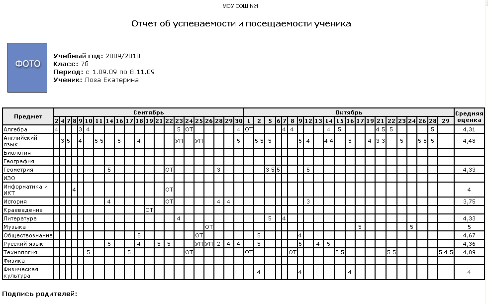

Данный отчет позволяет просмотреть сведения об успеваемости по всем предметам вместе со сведениями о посещаемости. В таблице указано, за какое число, по какому предмету и какую оценку получил учащийся.
Можно вывести отчет:
| · | по каждому ученику отдельно,
|
| · | сразу по всем ученикам класса.
|
В режиме "Все ученики класса" отчёт можно легко разослать всем родителям и учащимся выбранного класса. Каждый учащийся получит только отчёт о своей успеваемости и посещаемости; каждый родитель получит отчёт только о своём ребёнке.
Если на странице Настройки школы указан способ усреднения "средневзвешенное", то в отчёте считается средневзвешенная оценка, при подсчете которой задолженности (точки в журнале) приравниваются к двойкам.
Можно экспортировать отчет в MS Excel с помощью кнопки
Подробнее об особенностях экспорта в MS Excel вы можете прочитать на странице Экспорт данных из системы "Сетевой Город".
Пример отчета:
